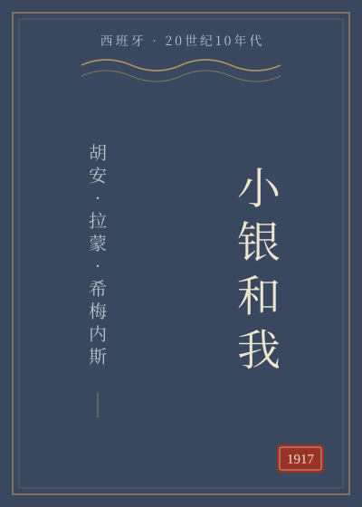
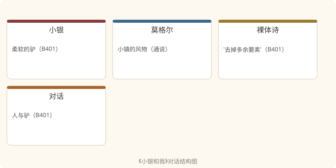

小银和我
一、基本信息
| 作者 | 胡安·拉蒙·希梅内斯 |
|---|---|
| 成书/出版 | 1917年（Britannica B401：Platero y yo (1917)——'the story of a man and his donkey'） Juan Ramon Jimenez — Encyclopaedia Britannica（百科全书） |
| 国别/地区 | 西班牙 |
| 时代 | 近代 · 20世纪10年代 |
| 体裁 | 散文诗集 |
| 语言 | 西班牙语 |

《小银和我》对话结构图（主题·结构图）
二、创作背景
Britannica（B401）：'the story of a man and his donkey'（一个人与他的驴的故事）——经英译在美国流行。
Britannica（B401）：希梅内斯——1956诺奖；'la poesía desnuda'（裸体诗）。
题材（通说待核）：与小银（驴）的莫格尔对话——140余章的散文诗。
三、内容脉络
（通说待核）'小银'（Platero）：柔软的小驴与莫格尔的风物。
（通说待核）'孩子们……不要给小银面包'（不采为引文——首段细节通说待核）。
四、主要人物表
| 人物 | 身份 | 说明 |
|---|---|---|
| 小银（Platero） | 驴 | （B401 书名人物） |
| '我' | 诗人 | （B401 语境） |
五、主题与艺术特点
- '人与驴'的对话（B401）。
- '裸体诗'的散文实践（B401：la poesía desnuda）。
- 莫格尔的风物志（通说待核）。
六、影响与评论
- Britannica：'the story of a man and his donkey'（B401）。
Juan Ramon Jimenez — Encyclopaedia Britannica（百科全书） - Britannica：1956诺奖（B401 交叉）。
Juan Ramon Jimenez — Encyclopaedia Britannica（百科全书）
七、阅读建议
难点
- 散文诗的节奏。
- 安达卢西亚小镇风物。
- 《小银和我》中译本（人民文学等——通说待核）。
- 西班牙文原版（公有领域状态待核）。
希梅内斯首选；与《一个新婚诗人的日记》对读。
八、待核实
- 章数（138章说）核对（通说）。
- 1917年出版细节待核。
- '小银'译名两说（《普特拉塞洛》）待核。
本页主要来源
胡安·拉蒙·希梅内斯的其他收录作品：小银和我